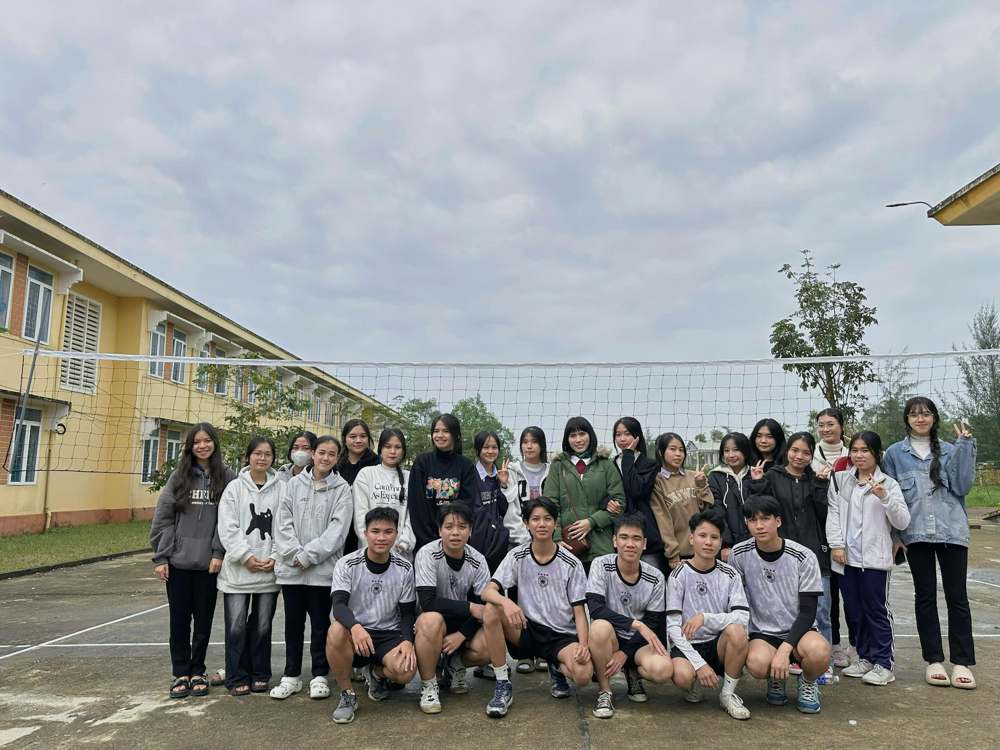
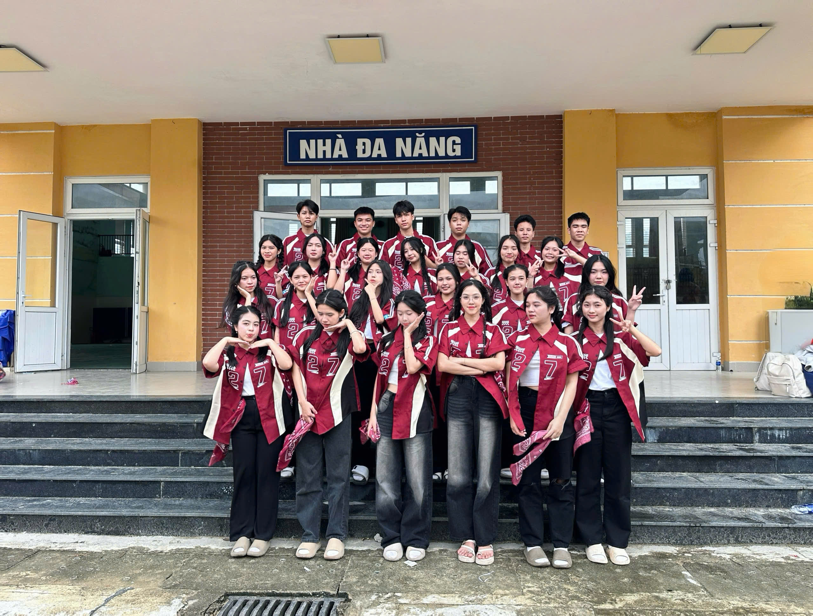

12B2-NHỮNG NGÀY CÒN MÃI
- Ba năm trước, chúng ta bước vào cấp 3 với những bỡ ngỡ, lạ lẫm, chẳng ai biết sau này mình sẽ gắn bó với nhau ra sao. Vậy mà giờ đây, khi chỉ còn vài tháng nữa thôi là chia xa, chúng ta mới nhận ra thời gian trôi nhanh đến nhường nào...Nhớ ngày nào khi chúng em vừa mới bước chân đến trường, vẫn còn nhiều bỡ ngỡ với bạn mới, trường mới, thầy cô giáo mới. Giờ đây, trải qua các năm học tại nhà trường, chúng em thực sự đã học hỏi được rất nhiều điều, mọi thứ trước xa lạ, giờ đã trở nên quá đỗi thân thuộc với chúng em 
- Không chỉ là một lớp học, mà còn là một gia đình thứ hai – nơi có những buổi học sôi nổi, những lần cùng nhau chạy deadline, những tiếng cười không dứt trong giờ ra chơi. Dù đôi lúc có tranh cãi hay giận hờn, nhưng chính những điều đó giúp chúng ta thêm hiểu nhau, gắn kết hơn. Chúng ta đã cùng nhau vượt qua những bài kiểm tra căng thẳng, nếm trải áp lực thi cử, hào hứng chuẩn bị cho các hoạt động, vỡ òa trong niềm vui chiến thắng hay động viên nhau sau thất bại. Những tối muộn tập văn nghệ, những chuyến đi chơi, những lần dã ngoại – tất cả đều trở thành những ký ức đẹp đẽ. Đó là những tháng ngày vô tư, những kỷ niệm giản dị nhưng chứa đựng cả thanh xuân mà sau này, mỗi khi nhớ lại, lòng lại bồi hồi không nguôi
- Ngày Cuối Cùng Rồi Cũng Sẽ Đến…
- Rồi sẽ đến ngày chúng ta rời xa mái trường thân yêu, rời xa bảng đen, phấn trắng, rời xa những tháng ngày vô tư, hồn nhiên nhất của tuổi học trò. Nhưng dù thời gian có trôi, dù mỗi người một hướng, chúng ta vẫn mãi là một phần thanh xuân rực rỡ. Bởi lẽ, chúng ta đã cùng nhau cười, cùng nhau khóc, cùng nhau viết nên những kỷ niệm không thể phai mờ – một câu chuyện tuổi trẻ đẹp đến nao lòng, mà mỗi khi nhớ lại, trái tim lại thổn thức như vừa mới hôm qua.